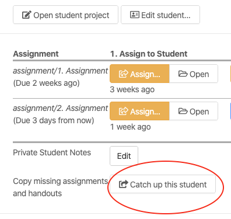
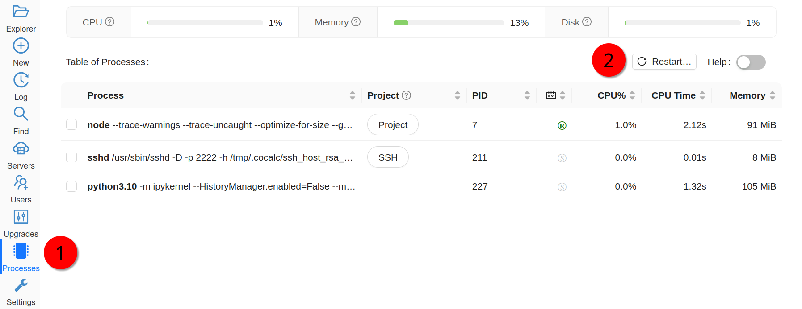

FAQ, Tips and Tricks
In this section we will present some CoCalc features and useful tricks that will make the management of your project easier and answer some common questions.
Delete and undelete students
Enrollments can change after initial course setup. CoCalc offers a convenient way of deleting a student from a student list, and reversing that deletion step. Deleting a student removes upgrades from the student project. Handouts and assignments will not be distributed after the student is deleted. However, files already in the project for a deleted student are not altered, and the student project is not deleted.
To delete a student from a course, open the course file and select the Students tab. Expand the entry for the student to be deleted. Click the “Delete” button at right and the confirmation button that appears next.
Deleting a student from the student list for a course.
Deleting a student, continued.
To undelete a student, open the course file and select the Students tab. Scroll to the bottom of the list. If any students have been deleted, there will be a link saying “Show n deleted students”. Click that link and entries for all the deleted students will be visible in the student list. Expand the entry for the student to be undeleted. Click the “Undelete” button at right to restore the student to the course. There will be a link at the bottom of the student list that says “Hide n deleted students” to stop showing entries for deleted students.
Enabling display of deleted student records.
Undeleting a student.
After a student is undeleted:
If you are providing a license to your students, upgrades to the student project will be restored the next time it is started.
To add handouts and assignments that the student may have missed when their student record was deleted, see the documentation on how to catch up a student.
To completely delete a student entry from a course see Empty trash: remove deleted objects from course file below.
Delete and undelete assignments
The steps for deleting and undeleting assignments are analagous to those for deleting a student described above.
To delete an assignment from a course, open the course file and select the Assignments tab. Expand the entry for the assignment to be deleted. Click the “Delete” button at right and the confirmation button that appears next.
Note
Deleting an assignment from the course modifies only the course file. It does not actually delete any files from the project.
To undelete an assignment, open the course file and select the Assignments tab. Scroll to the bottom of the list. If any assignments have been deleted, there will be a link saying “Show n deleted assignments”. Click that link and entries for all the deleted assignments will be visible. Expand the entry for the assignment to be undeleted. Click the “Undelete” button at right to restore the assignment. There will be a link at the bottom that says “Hide n deleted assignments” to stop showing entries for deleted assignments.
To completely delete an assignment from a course see Empty trash: remove deleted objects from course file below.
Delete and undelete handouts
The steps for deleting and undeleting handouts are analagous to those for deleting a student described above.
To completely delete an handout from a course, open the course file and select the handouts tab. Expand the entry for the handout to be deleted. Click the “Delete” button at right and the confirmation button that appears next.
Note
Deleting a handout from the course modifies only the course file. It does not actually delete any files from the project.
To undelete a handout, open the course file and select the handouts tab. Scroll to the bottom of the list. If any handouts have been deleted, there will be a link saying “Show n deleted handouts”. Click that link and entries for all the deleted handouts will be visible. Expand the entry for the handout to be undeleted. Click the “Undelete” button at right to restore the handout. There will be a link at the bottom that says “Hide n deleted handouts” to stop showing entries for deleted handouts.
To permanently delete a handout from a course see Empty trash: remove deleted objects from course file below.
Empty trash: remove deleted objects from course file
Deleting a student, assignment, or handout from a course will mark the information as deleted, but preserve the information in the course file in case you want to undelete it. If records for deleted entries accumulate, then normal processing of the course, such as distributing assignments or reconfiguring student projects, may be slowed down.
To remove entries about deleted students, assignments, and handouts from the course file (rather than just marking them as deleted), use the Purge ... button in the course Configuration tab at lower right under “Empty Trash”. Purging deleted objects from the course file this way does not affect any other files or configuration in CoCalc. After purging deleted objects, you can still view deleted metadata by looking at the course file with TimeTravel.

Removing deleted objects from course file.
Convert student notebooks to pdf for export
Here is a convenience feature that can be useful for offline grading and archiving of student work. Assume that an assignment consists of one or more Jupyter notebooks or Sage worksheets and that you have run Collect... for the assignment. With a single click, you can now do the following:
gather student work into a single folder, prepending each notebook or worksheet name with the student first and last name
create a pdf file of each notebook or worksheet and place it in the same folder
create a single zip archive of all notebooks and worksheets for that assignment
Open the the course file and select the Assignments tab. Then click the triangle next to the assignment you are interested in. Click to the bottom of the assignment area and select Export collected student files... and the export folder with pdfs and zipfile will be created.
create pdf files and zip archive from collected notebooks
For example, if the course is “Math_202”, collected notebooks are gathered into folder “Math_202-export” as shown:
terminal view, showing export folder and zipfile contents
Note: in some cases, the pdf file cannot be created; in this case, the utility creates html instead of pdf.
Copy missing files to a student project
If a student project is missing some of the handouts or assignments previously distributed, you can copy those materials to their project. Click on the student name in the Students list in the course file. At the bottom of the expanded content for that student is a button “Catch up this student” that will do that.
Export student file use
This feature provides 1-click export of extensive data about what students do in an assignment or handout. Getting information about what happens with anonymous users of shares is not implemented.
To get a report about all the times when students opened or edited any file in an assignment or handout, do the following:
Open a .course file.
Toggle to show the information about a handout or assignment, and scroll to the bottom.
There is a new button “Export file use times for this…”
Click that button.
A json file will open in a new tab. Hopefully the format is self explanatory. The times are all in milliseconds since the epoch, so in Javascript you can write new Date(time) to make this a date, and in Python do this. You can also load json into python using the json module (import json).
The json files are created in the following path:
course-exports/[name of course]/file-use-times/[handouts|assignments]/assignment_name.json

Exporting file use times in course file Assignments tab.
Text fields generally support Markdown and LaTeX
CoCalc not only facilitates the creation of LaTeX documents, but most input areas in CoCalc support and render LaTeX and markdown (specifically GitHub Flavored Markdown).
For example, you can use LaTeX math formulas in the chat rooms:

which renders as

Making multiple assignment folders quickly
So far we have shown how to create folders and files by using the New button every time. → 
However, such a method could be quite time consuming when you need to create multiple folders, subfolders, and documents. If you are a terminal fan you could create a shell script in your preferred programming language and run it from the terminal.
Alternatively, in the files menu of your project, you can enter paths such as assignments/assignment1/directions.md then hit enter or ctrl+enter to create directions.md inside the folder assignment1 within assignments. Hitting enter will open up the new file while ctrl+enter will silently create the necessary files and folders in the path.

You can also create folders here just by ending with a /

Starting up everyone’s project before class
By default, projects have an idle time of 24 hours before they spin down and need to be restarted. However, it may be handy to start everyone’s project before a class or presentation so that they are all “hot loaded”.
You can easily do this from your course manager: first, open the course configuration tab:

Then scroll down to find and click on the Start all… button

Restarting a project
Every time you open a Jupyter notebook or a Sage Worksheet, its state is stored in memory. This can become quite costly if you open multiple files one after the other (e.g. when you are marking your students’ work).
To solve this, you can stop every instance using the stop button (for both Jupyter notebooks and Sage worksheets) once you are done with your marking.

Alternatively, you can restart the entire project, which will clean everything. You just need to go to your project settings and click on Restart project.
Using Git
CoCalc support for the terminal enables students (and instructors) to collaborate using Git within a course-affiliated project.
If you already have a project or some files allocated in GitHub you can add them to your project. Click on the New button and add/paste the link to your repository in the appropriate text box. Click on the Download from Internet button.
Also you can use the terminal to commit and push changes to your repository in GitHub. (see howto: Git Version Control)

Note
You need to have internet access enabled in your project.
Time Travel Diffs
The editor based documents (e.g. Python code, LaTeX documents, markdown files, etc.) as well as Jupyter notebooks and Sage worksheets are Time Travel Diffs supported. The Time Travel Diffs feature allows you to see what happened with a file within a certain time interval.
Open up Time travel from any document:

then click on changes and drag the sliders to see the document in a given time interval.

If you need to revert the document to a previous state, drag the slider to the desired revision and click on Revert live version to this. Doing so reverts the document contents to that specific version. If you have checked the Changes box to compare two revisions and click on Revert live version to this, contents are reverted to the latter of the two revisions being compared. Note that reverting a file simply creates a new version of the file equal to the old file at that point in time; in particular, no work is lost!
Run Terminal command in all student projects
If you are managing a course, there may be a time when you want to run a shell command in every student project, say to install some package without waiting for the support to do it globally or to create some file.
In the Configuration tab of the course there is a
panel called Run Terminal command in all student projects. You
can use it to run a single arbitrary bash command in
all projects in a course:

Hint
“Single” command may contain multiple parts. For example, if you are installing a package, it may be useful to do it only if the package is not installed yet (otherwise there may be some issues collecting the output). We can achieve this by issuing a command like
python -c "import cufflinks" || pip install --user cufflinks
How exactly are Assignments copied to students?
When you assign an assignment to your students, it is copied from your project to your students’ projects.
What happens when you assign again.
For files that have a newer timestamp than the corresponding file in the target directory, the target file is copied to a backup and the new source is copied over.
For files that have an old timestamp and you’ve already assigned the assignment (and students may have worked on it), nothing at all will happen on copy.
Adding a new file to an assignment.
If you just want to add a new file to an assignment, you could ensure that all the other files are very old, e.g., by using the touch command in a Linux Terminal. E.g.,
touch -d 'Jan 1' *
would make it so that everything appears to be from January 1.
Alternatively, you could just remove the files from the assignment folder, then move them back later.
Behind the scenes.
Assignments are copied with the command:
rsync -zaxs --update --backup [...] source/ dest/
There are two important options here:
--update: do not copy over a file if a NEWER file (by timestamp)
exists in the destination
and
--backup: if the source file `foo` (say) is NEWER than the destination file
`foo` (e.g., you edit your homework assignment after students have worked
on it), then `dest/foo` is moved to `dest/foo~` and `foo` is copied
to the destination.
Assigning an assignment never deletes missing files in the target,
unless you explicitly clicked and confirmed the Replace student files! button.
This button adds an additional flag:
--delete
This tells rsync to delete extraneous files from the receiving side
(ones that aren’t on the sending side), but only for the
directories that are being synchronized.
Some tests below illustrate how rsync works:
$ mkdir tmp2
~$ cd tmp2
~/tmp2$ mkdir a b
~/tmp2$ echo "0" > a/x
~/tmp2$ rsync -zaxs --update --backup a/ b/
~/tmp2$ ls a
x
~/tmp2$ ls b
x
~/tmp2$ rsync -zaxs --update --backup a/ b/
~/tmp2$ vi b/x
~/tmp2$ rsync -zaxs --update --backup a/ b/
~/tmp2$ ls -lht b
total 1.5K
-rw------- 1 user user 4 Oct 13 16:27 x
~/tmp2$ more b/x
0
1
~/tmp2$ touch a/x
~/tmp2$ rsync -zaxs --update --backup a/ b/
~/tmp2$ ls b
x x~
~/tmp2$
Note
We would like to add a new 3-way merge option, which would be more clever and instead of making a backup file of students modified work, would merge your changes into their file. This is not done yet.
Invite Students Without Having Their Email Addresses
Question: The course management software at my university makes it hard to get a list of student emails. Is there a way I can send them a generic invitation link that they can click to join the course?
Answer: We don’t support sending generic invitations yet (see CoCalc issue #886). However, you can use the following workaround:
Assign fake email addresses to all students in your class, e.g.:: c
student+<student_id>@your-university.edu
Then tell the students to sign up for CoCalc using that “fake” email address. This assumes you have some way to communicate with your students, perhaps in class.
Once students sign up, they will be added as collaborators to their project for the course. At that point, they can change their email address to anything they want, in order to ensure they get @mention notifications, can do password reset, etc.
If student_id’s are secret/sensitive, you could use something derived from them, e.g., the last two digits.
Verifying Student Activity
In some situations it may be useful to confirm when work was done in a student project. (See also: Export student file use.)
If you open the activity log for a student project, you can see who opened any file and when.
With any file open in a student project, you can see exactly what was done with it and when by clicking the TimeTravel button, including the total number of edits made to the file (as recorded by TimeTravel) and time and date of the last change. You can click the “Changes” checkbox and see what happened for any range of dates.
It’s impossible for users to delete or change something once it is recorded in TimeTravel (except by explicitly requesting deletion via a support request). However, it’s conceivable maybe something got lost, since no software is perfect.
Folders under Backups are snapshots of the exact state of the filesystem, which are independent of TimeTravel, but provide a good double check.
Moodle integration
Q: Is there a way to integrate CoCalc into my Moodle environment?
A: Unfortunately, not really. We do have our own fairly sophisticated course management functionality for creating and distributing assignments, working in real time with students, and collecting, grading and returning. See Instructor Guide.
You can also publish an assignment to the CoCalc share server (you can make content “you must know the link”), point students at that link, and have them download the work when they are done and submit it via Moodle.
Change the due date of an assignment
When an assignment is distributed, the due date, if any, is written to file DUE_DATE.TXT in the folder for the assignment in each student project.
To change the date after distributing an assignment, the instructor could run a Linux shell command in all student projects that changes the due date file. See Run Terminal command in all student projects above for how to run the command. In the example above, the command to be run could be:
echo "new due date: 2020-10-09 11:00 AM" > Assignments/Assignment1/DUE_DATE.txt
Account management, restrictions, and Single-Sign-On
If your university has certain security restrictions on accounts, like requiring 2FA or password rules, the best way to impose them is to provide the identity by your organization! This is accomplished best via Single Sign On (SSO).
This way, it is ensured that all users on CoCalc with a specific domain in their email address are authenticated by your institution. Your organization is providing the identity of your students – not CoCalc. The sign-up process happens with all the restrictions your organization imposes on the student account access, and hence this aspect stays under your control.
On CoCalc’s side, the authentication starts here: https://cocalc.com/sso/
Under the hood this is accomplished by SAML 2.0, which is probably already supported in some way. There are also other mechanisms we support, but this one is quite a well known industry standard and known to work well.
The only caveat, this is for the entire organization. This might require some internal communication, but long-term, this is certainly the best way to go forward, since such restrictions apply to the entire organization – not just your course.

{kind=link}
{kind=link}
{kind=link}
{kind=link}
{kind=link}
{kind=link}
{kind=link}
{kind=link}
{kind=link}